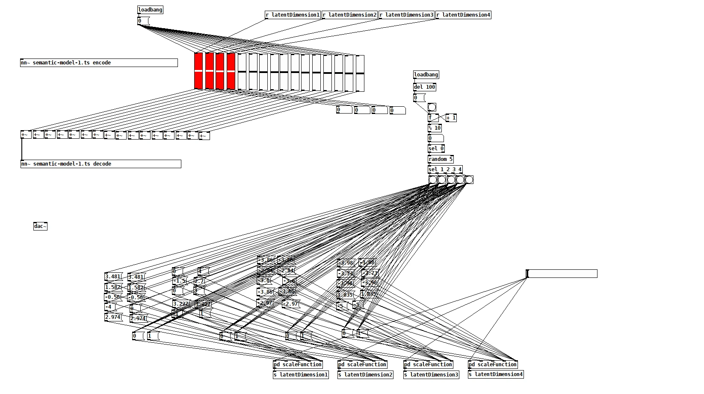
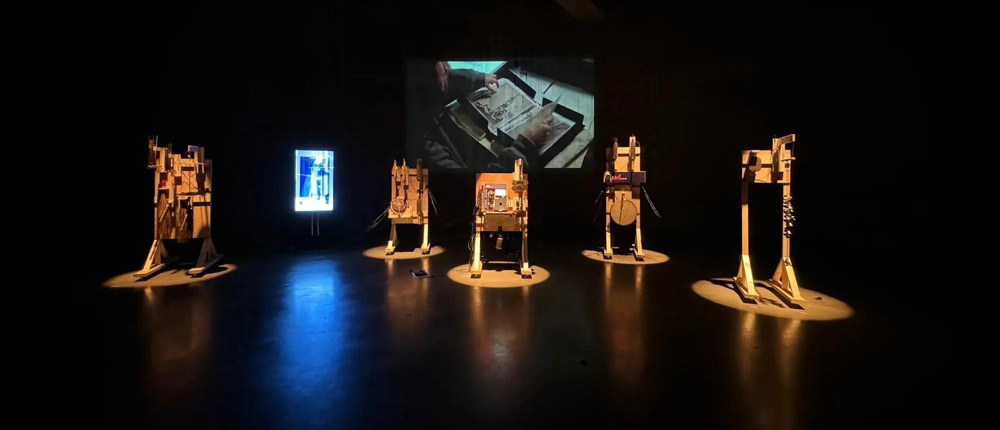
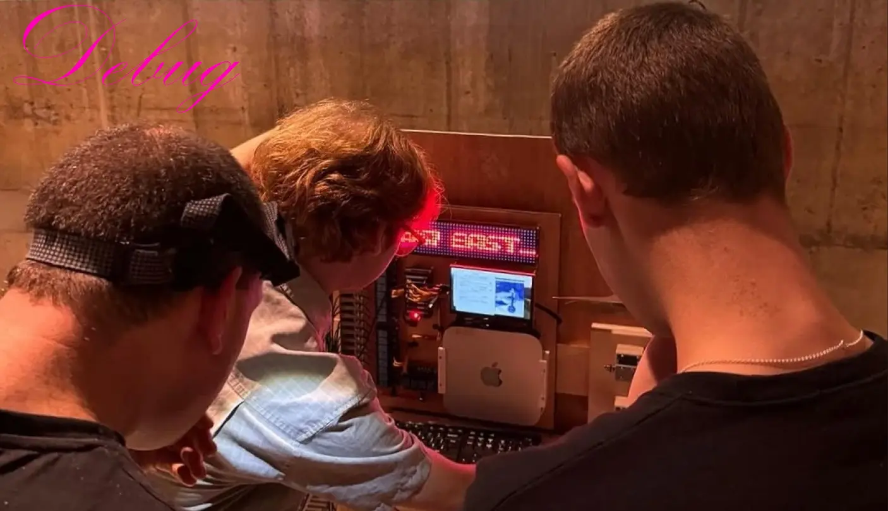
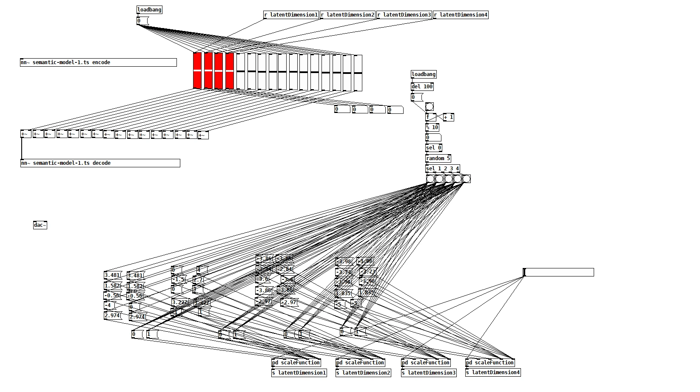
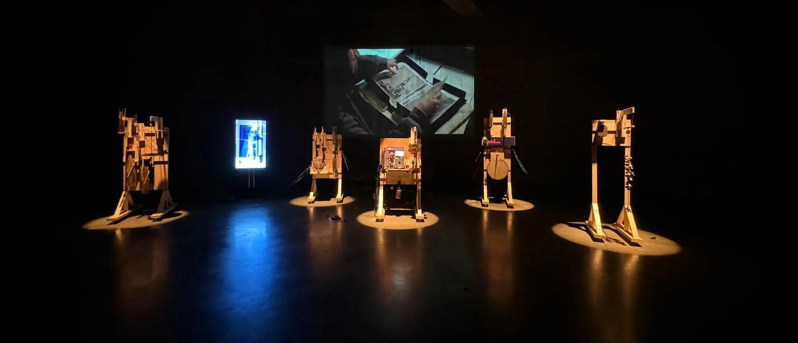
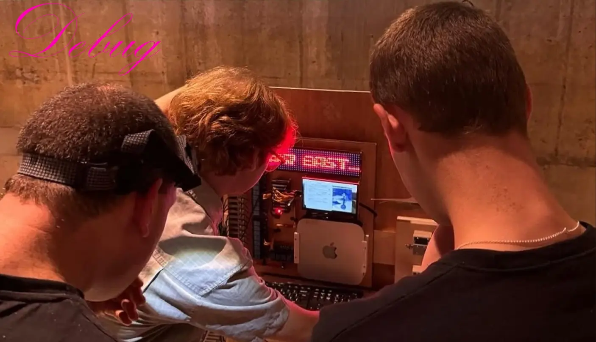

Technologies & Links
Mac Mini
Arduino
Python NLP
Pure Data Sonification
Video <<<
Audio <<<
GitHub <<<
Conference <<< (⌐⊙_⊙)
Project Statement
Data sonification through a 'DIY' diagnostic tool consisting of fragmented instruments/mechanised parts, and the feedback of live machine learning museum soundscapes.
Working closely with artist Erika Tan, I constructed an archival sonification schema. The installation was presented in the Blavatnik Tanks, Tate Modern.
Ancestral (r)Evocations gathers and scrapes collections data referencing ‘Southeast Asia’ from British institutions (Tate and Wellcome Collection) to bring together forms of computational processes and human–computer collaboration where data, digitised and physical materials, speculation and generative processes create a series of loosely subjective and firmly indexical sound and image events.
Probing the depths of museal collections, processes and their current states of ‘health and well-being’.
I was commissioned to develop the ‘semantic sound’ layer - collections data is translated into numerical vectors and ‘labelled’ (a machine learning process) based on the existence (or lack of) racialised collections data statements, separating data into binaries which feed new systems of sonification and machine learning.
Sounds collected in the Tate Modern repository were used to train a Realtime Audio Variational autoEncoder (RAVE) - a neural network model that learns to re-synthesise the training corpus, artificially, in real-time.
The model learns a compressed, low-dimensional representation of the high-dimensional audio input. This compressed "manifold" can be explored through exploration of the “latent space” - movement within this space will modify the audio output, corresponding to different learned representations of the archival training data.
This space is explored, and semantically meaningful movements can be automated using the translated numerical vectors. This creates a generative soundscape, constantly changing, yet supporting the conceptual framework of the artwork. These ‘live’ components of sound feedback machine learnt and generated sounds of ‘Tate Modern’ and a more musical track of reconfigured recordings of the instruments.
The commissioned work has developed as a practice-led research project supported by the Decolonising Arts Institute, Transforming Collections Artist Research Residencies.
 




